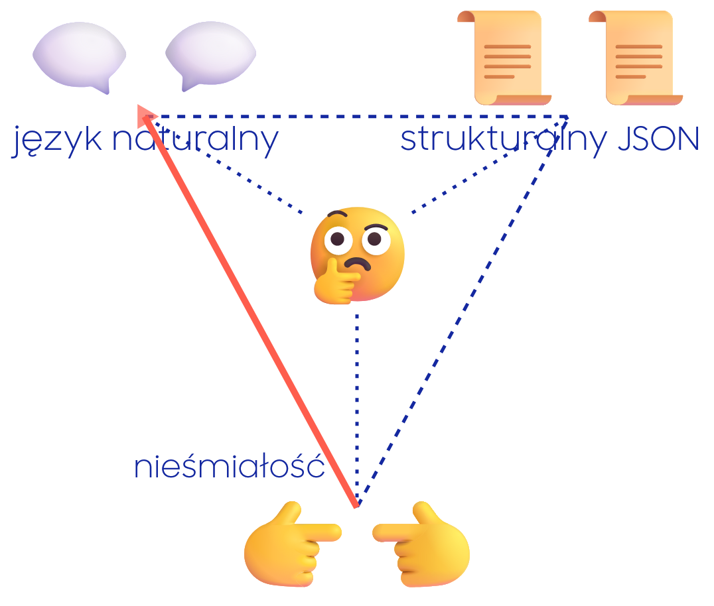
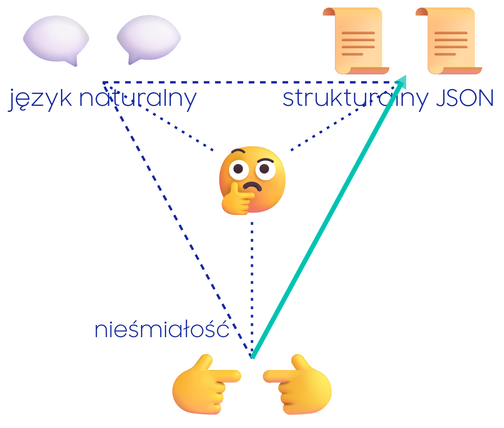

Szybkie ścieżki kognitywne
Jest w mózgu szybka ścieżka wykrywania zagrożenia
Ten mechanizm jest nadczuły:
Mniejszy wstyd jest przestraszyć się krzaka,
niż nie zauważyć tygrysa.
Yann LeCun:
Chief AI Scientist at Meta
Szybkie ścieżki kognitywne
AI potrafi bardzo dobrze manipulować językiem
dajemy się oszukać, że jest inteligentne
Operowanie językiem nie jest takie trudne
Yyyy?
Brzmi jak herezja, tylko człowiek tak umie
Veronice Megler 40 lat temu wystarczył parser na 400 słów
Mastah:
Master hacker
⟶ Masta hacka
⟶ Mastah
Structural JSON
Garbage-in-Garbage-out
Na strukturalne prompty był hype dawnojakiś rok temuByłem na rekrutacji, zapytali czy umiem w prompty
A ja im od razu strukturalnego JSONa…
Łoo, Ty to ale jesteś! Mastah 😮
Mowa jest o czymś takim:
{
"task": "...",
"jira_context": "...",
"memory_bank": ["..."],
"files": ["..."],
"problem": "...",
"proposed_approach": "..."
}
Interakcja:
- chat bot
- mechaniczny programista
Produkcja:
- prompt w ramach toolchainu
- fragment procesu
Structural JSON
Garbage-in-Garbage-out
Mowa jest o czymś takim (jako prompt otwierający interakcję)
{
"task": "...",
"jira_context": "...",
"memory_bank": ["..."],
"files": ["..."],
"problem": "...",
"proposed_approach": "..."
}
Mieszanie benchmarków z produkcji w interakcję→ overhyped JSON
Pytanie z Reddita: "Co się z tym robi?"
To się: projektuje, wypełnia danymi i wkleja jak zwykły prompt
Interakcja:
- chat bot
- mechaniczny programista
Produkcja:
- prompt w ramach toolchainu
- fragment procesu
Structural JSON
Garbage-in-Garbage-out
Mowa jest o czymś takim (prompt otwierający interakcję):
{
"task": "...",
"jira_context": "...",
"memory_bank": ["..."],
"files": ["..."],
"problem": "...",
"proposed_approach": "..."
}
Interakcja:
- chat bot
- mechaniczny programista
Produkcja:
- prompt w ramach toolchainu
- fragment procesu
Structural JSON
Garbage-in-Garbage-out
Mowa jest o czymś takim (prompt otwierający interakcję):
{
"task": "...",
"jira_context": "...",
"memory_bank": ["..."],
"files": ["..."],
"problem": "...",
"proposed_approach": "..."
}
Mój rutynowy prompt na początek implementacji zadania z Jiry… przygotowanie czasem trwa nawet pół godziny
/deep-planning Jesteśmy w tasku `...`
Kontekst z Jiry: "...".
Przeczytaj memory bank:
- `...`
- `...`
Przeczytaj pliki:
- `...`
- `...`
Problem jest taki, że ...
Mój pomysł jest taki, że ...
Wartość jest w kontekście, nie w klamrach
Andrew Ng
100 Most Influential People in AI
Trójkąt akceptacji
Specjaliści, którzy wykorzystają AI, będą w stanie zrobić dużo więcej
Osoby, które nie wykorzystają tych możliwości zostaną w tyle
Wspieranie się AI to jest nowa wymagana umiejętność
Znam inżynierów wysokiej klasy, którzy z niej nie korzystają
Może ten trzeci wierzchołek jest ważniejszy niż wygląda? 😞

🫣 Może z "nieśmiałości" łatwiej wyjść przez strukturę niż dialog?
Trójkąt akceptacji
Specjaliści, którzy wykorzystają AI, będą w stanie zrobić dużo więcej
Osoby, które nie wykorzystają tych możliwości zostaną w tyle
Wspieranie się AI to jest nowa wymagana umiejętność
Znam inżynierów wysokiej klasy, którzy z niej nie korzystają
Może ten trzeci wierzchołek jest ważniejszy niż wygląda? 😞

🫣 Może z "nieśmiałości" łatwiej wyjść przez strukturę niż dialog?
Może podpowiedź jest na obrazku?
Model nie zauważy, a przestajesz modelować "kogoś"
Wojciech Grygiel
teolog-naukowiec
Czy cline ma duszę?
w filmie mowa o:
Kongregacja Nauki Wiary, list o eschatologii, 1979.
Dokument nie robi roszczeń w stylu "dusza istnieje".
Jest to coś, co warunkuje naszą podmiotowość, przetrwa śmierć fizyczną.
… nie jest wykluczone, że nie można podjąć jakiegoś innego aparatu …
Jak to nazwiemy - to kwestia zmienna.
Bez precyzowania z czego ludzka dusza jest, ale jak może być z czegoś innego, to wszystko jedno 😇
👏 Thank you 🤗
❤️❤️❤️ 💖💖💖 🌹🌹🌹 💖💖💖 ❤️❤️❤️

©'26 Jacek Banaszczyk
j.banaszczyk@samsung.com